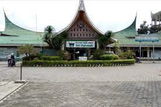
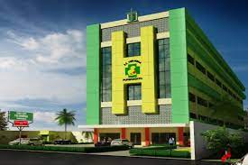
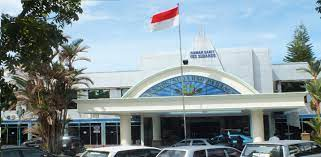
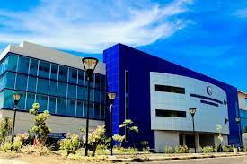
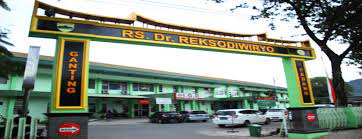
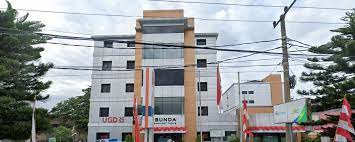
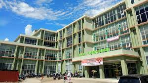
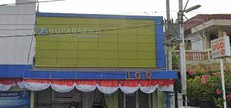
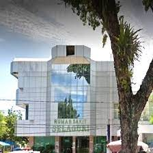

<!DOCTYPE html>
<html>
<head>
    <title>Peta RS</title>
    <link rel="stylesheet" href="leaflet.css"/>
    <script src="leaflet.js"></script>
</head>
<body>
    <div id="mapku" style="width: 100%; height: 600px;"></div>

</body>
<script type="text/javascript">
     var mymap = L.map('mapku').setView([-0.9137822,100.4640162],17);
    
     L.tileLayer('https://tile.openstreetmap.org/{z}/{x}/{y}.png', {
        maxZoom:18,
        id:'mapbox/streets-v11',
        tileSize: 512,
        zoomOffset: -1
    }).addTo(mymap);

    var info_rs_unand ='<p style  ="text-align: center;"></p><p>Rumah Sakit Universitas Andalas adalah salah satu rumah sakit yang ada di Kota Padang, Sumatera Barat.[2] Rumah sakit ini berada di bawah pengelolaan Universitas Andalas yang berlokasi di komplek kampus Universitas Andalas, Limau Manis, Kecamatan Pauh, Kota Padang. </p>';
    
    var info_rs_sitirahmah ='<p style  ="text-align: center;"></p><p> Rumah Sakit Islam Siti Rahmah Padang merupakan salah satu Rumah Sakit Swasta yang melaksanakan Pelayanan Kesehatan secara menyeluruh dan paripurna serta didukung dengan peralatan medis terlengkap di wilayah Sumatera Barat. Rumah Sakit memberikan pelayanan gawat darurat, rawat jalan, rawat inap, operasi, dan beberapa layanan penunjang lainnya. Rumah Sakit memiliki layanan unggulan di layanan Hemodialisa, Bedah Mata Phaco, ESWL, Endoskopi/Kolonoskopi, Laparoskopi, MRI 1,5 Tesla, CT Scan 128 Slice.</p>';
    
    var info_rs_hermina ='<p style  ="text-align: center;"></p><p>Hermina Hospitals menawarkan layanan rumah sakit umum dan telah mengembangkan layanan komprehensif. didukung oleh perawatan spesialis. Dalam menjalankan fungsinya, Rumah Sakit Hermina menyediakan perawatan kesehatannya secara optimal dan profesional, di bawah nilai "Pertumbuhan, Kesehatan, Umur Panjang". </p>';

    var info_rs_yossudarso ='<p style  ="text-align: center;"></p><p>RS Yos Sudarso melayani masyarakat Padang. Kami dengan semangat kepahlawanan Laksamana Madya Sudarso, berkomitmen meningkatkan kesehatan masyarakat dengan pelayan prima berdasarkan cinta kasih </p>';    

    var info_rs_mdjamil ='<p style  ="text-align: center;"></p><p>Rumah Sakit Umum Pusat Dr. M. Djamil Padang adalah sebuah rumah sakit pemerintah yang terletak di kota Padang, provinsi Sumatra Barat, Indonesia. RSUP Dr. M. Djamil Padang didirikan pada tahun 1953. Rumah sakit ini merupakan rumah sakit pemerintah yang merupakan rumah sakit rujukan untuk wilayah Sumatra Bagian Tengah. </p>';  

    var info_rs_tentara ='<p style  ="text-align: center;"></p><p>Rumah Sakit Tentara dr. Reksodiwiryo (RST Reksodiwiryo) adalah sebuah rumah sakit pemerintah yang dikelola oleh TNI-AD terletak pada kawasan Ganting, kota Padang, provinsi Sumatera Barat, Indonesia. Rumah sakit ini berdiri pada kawasan cagar budaya yang sebelumnya merupakan bangunan peninggalan zaman Belanda. Pada rumah sakit ini Walikota Padang Bagindo Azizchan diotopsi untuk memastikan penyebab terbunuhnya beliau. Rumah Sakit dr. Reksodiwiryo merupakan rumah sakit yang telah mendapat akreditasi dari Kementrian Kesehatan dengan kategori 5 Pelayanan. Rumah Sakit dr. Reksodiwiryo juga bertindak sebagai Rumah Sakit Trauma Centre bagi peserta Jamsostek. Rumah Sakit dr. Reksodiwiryo juga mengadakan kerjasama dengan Jasa Raharja untuk menangani korban kecelakaan lalu lintas. </p>';   
    
    var info_rs_bmc ='<p style  ="text-align: center;"></p><p>Rumah Sakit Umum Bunda BMC Padang merupakan Rumah Sakit swasta yang awal mulanya berdiri pada tahun 1967 sebagai rumah bersalin. RS Bunda BMC Padang memiliki Visi mewujudkan rumah sakit terdepan dalam bidang ibu dan anak Indonesia dengan pelayanan berkualitas tinggi. Dengan Misi mengembangkan kualitas pelayanan medis dan non-medis yang berkualitas, mengembangkan sarana dan prasarana sesuai dengan perkembangan teknologi saat ini. </p>';  

    var info_rs_rasidin ='<p style  ="text-align: center;"></p><p>Rumah Sakit Umum Daerah dr. Rasidin Padang adalah sebuah rumah sakit pemerintah yang terletak di kota Padang, provinsi Sumatra Barat, Indonesia. Nama rumah sakit ini diambil dari nama Dr. Rasidin, salah seorang wali kota Padang periode 1949—1956. </p>';  

    var info_rs_ropanasuri ='<p style  ="text-align: center;"></p><p>Rumah Sakit Bedah Ropanasuri merupakan Rumah Sakit Khusus Bedah yang terletak di wilayah Padang dan didirikan dari tahun 1980an. RS Bedah Ropanasuri memiliki Visi menciptakan pelayanan secara paripurna di wilayah sekitar. Dengan Misi memberi pelayanan bedah yang bermutu dan profesional dengan tujuan penyelamatan jiwa pasien, dan menjadi rumah sakit yang terakreditasi paripurna. </p>';

    var info_rs_selaguri ='<p style  ="text-align: center;"></p><p>Rumah Sakit Selaguri berada dibawah naungan PT Selaguri Citratama Medika Padang dan berlokasi di Padang, Sumatera Barat. Rumah Sakit menyediakan layanan poliklinik spesialis seperti poli anak, poli penyakit dalam, poli anestesi, poli mata, poli kulit dan kelamin, dan lain lain. Fasilitas layanan medik yang tersedia yaitu farmasi, UGD, radiologi, medical check up, dan lain lain. </p>';

  var info_rs_unand
  var info_rs_sitirahmah
  var info_rs_hermina
  var info_rs_yossudarso
  var info_rs_mdjamil
  var info_rs_tentara
  var info_rs_bmc
  var info_rs_rasidin
  var info_rs_ropanasuri
  var info_rs_selaguri

  L.marker([-0.9202678855879648, 100.45648125146288]).bindTooltip("RS UNAND").bindPopup(info_rs_unand).addTo(mymap); 

  L.marker([-0.8707044249250894, 100.38395389668639]).bindTooltip("RS SITI RAHMAH").bindPopup(info_rs_sitirahmah).addTo(mymap); 

  L.marker([-0.9174895304541196, 100.36043093796795]).bindTooltip("RS HERMINA").bindPopup(info_rs_hermina).addTo(mymap); 

  L.marker([-0.9362953060617734, 100.36261500913294]).bindTooltip("RS YOS SUDARSO").bindPopup(info_rs_yossudarso).addTo(mymap); 

  L.marker([-0.9433623790663095, 100.36705486495782]).bindTooltip("RS M.DJAMIL").bindPopup(info_rs_mdjamil).addTo(mymap); 

  L.marker([-0.9506509889237652, 100.37198796680295]).bindTooltip("RS TENTARA").bindPopup(info_rs_tentara).addTo(mymap); 

  L.marker([-0.9508360342162696, 100.36754145330801]).bindTooltip("RS BMC").bindPopup(info_rs_bmc).addTo(mymap); 

  L.marker([-0.87935345491767, 100.39456079563796]).bindTooltip("RS RASIDIN").bindPopup(info_rs_rasidin).addTo(mymap); 

  L.marker([-0.9350945415584607, 100.3593456802979]).bindTooltip("RS ROPANASURI").bindPopup(info_rs_ropanasuri).addTo(mymap); 

  L.marker([-0.9424005599398108, 100.35804006495788]).bindTooltip("RS SELAGURI").bindPopup(info_rs_selaguri).addTo(mymap); 

  var circle = L.circle ([-0.9373955595283165, 100.36037832401897],{
        color: 'red', 
        fillColor: 'f03',
        fillOpacity: 0.5,
        radius: 500
    }).addTo(mymap).bindPopup('I am a circle');

    var polygon = L.polygon([
        [-0.9202678855879648, 100.45648125146288],
        [-0.8707044249250894, 100.38395389668639],
        [-0.9174895304541196, 100.36043093796795],
        [-0.9362953060617734, 100.36261500913294],
        [-0.9433623790663095, 100.36705486495782],
        [-0.9506509889237652, 100.37198796680295],
        [-0.9508360342162696, 100.36754145330801],
        [-0.87935345491767, 100.39456079563796],
        [-0.9350945415584607, 100.3593456802979],
        [-0.9424005599398108, 100.35804006495788]
    ]).addTo(mymap).bindPopup('I am a polygon')

    var popup = L.popup()
        .setLatLng(e.latlng)
        .setContent('you clicked the map at'+ e.latlng.toString())
        .openOn(mymap);

        var LeafIcon = L.Icon.extend({
            options: {
                iconSize: [16,16]
            }
        });

        var masjidicon = new LeafIcon ({iconUrl: 'images/masjidicon.png'});
        L.marker([-0.9241036505238577, 100.3625110123699],{icon:masjidicon}).bindTooltip("mesjid raya").addTo(mymap);


  
</script>
</html>